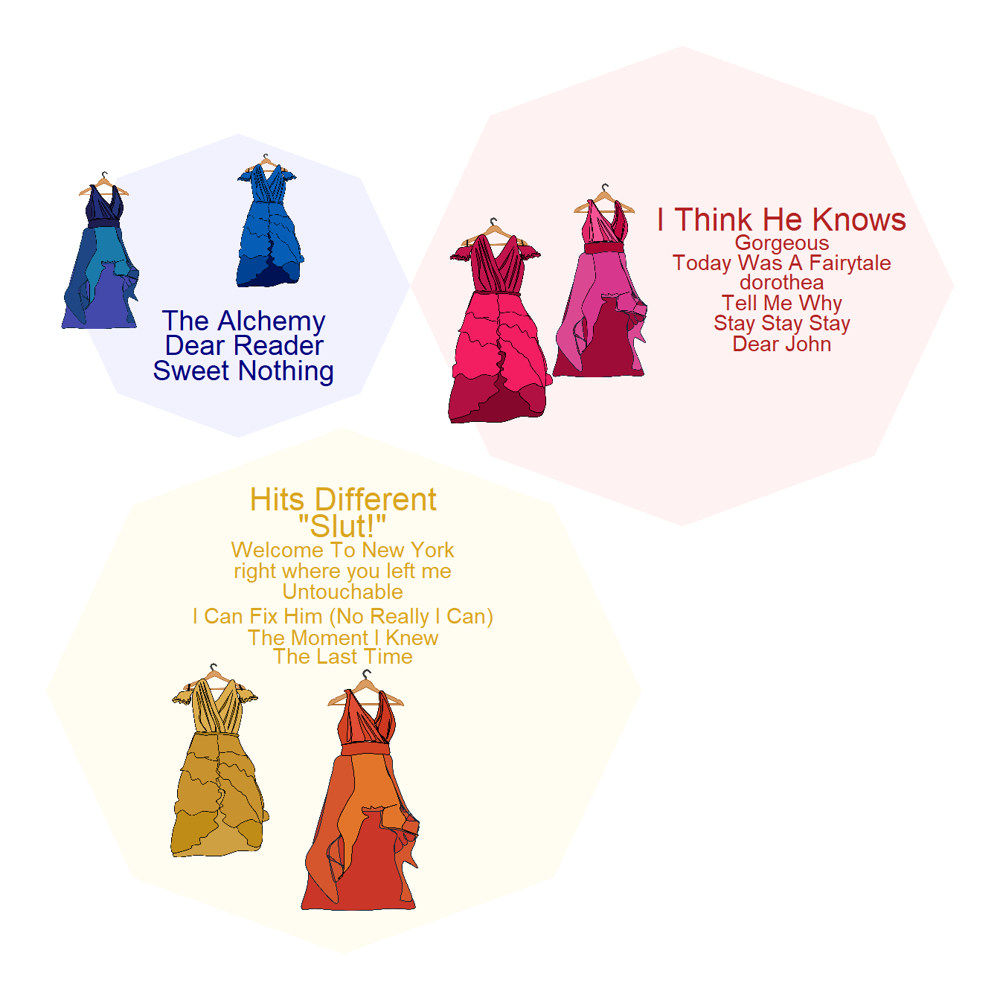

## extra packages
require(ggimage)
require(packcircles)
require(ggrepel)
require(cowplot)
require(extrafont)2 Visualizing the data
Note
Again, please note that data paths are relative to the root of the GitHub repository
Warning
This chapter requires data from Section 1.3 to be loaded!
The most worn looks
Code
## map hex colour to outfit
dressColorMapping <- unique(surpriseSongsDressColours %>% select(DressName, ColourHex1))
colorPaletteDresses <- setNames(dressColorMapping$ColourHex1, dressColorMapping$DressName)
pathToDressColours <- "dress_drawings/"
## map outfits to the corresponding images
oneRowPerConcert %>%
count(DressName) %>%
mutate(
percentage = n / sum(n) * 100,
imagePath = case_when(
DressName == "Pink" ~paste0(pathToDressColours, "Pink.png"),
DressName == "Green" ~paste0(pathToDressColours, "Green.png"),
DressName == "Yellow" ~paste0(pathToDressColours, "Yellow.png"),
DressName == "Blue" ~paste0(pathToDressColours, "Blue.png"),
DressName == "Flamingo pink" ~ paste0(pathToDressColours,"Flamingo pink.png"),
DressName == "Ocean blue" ~ paste0(pathToDressColours,"Ocean blue.png"),
DressName == "Sunset orange" ~ paste0(pathToDressColours,"Sunset orange.png"),
DressName == "Cotton candy" ~paste0(pathToDressColours, "Cotton candy.png"),
DressName == "Blurple" ~paste0(pathToDressColours, "Blurple.png"),
DressName == "Grapefruit" ~ paste0(pathToDressColours,"Grapefruit.png"),
DressName == "Popsicle" ~ paste0(pathToDressColours,"Popsicle.png"),
TRUE ~ NA_character_
)) -> outfits
## barchart
ggplot(outfits, aes(x = reorder(DressName, -n), y = n, fill = DressName)) +
geom_bar(stat = "identity", width = 0.8) +
geom_image(
aes(image = imagePath, y = n),
size = 0.15,
by = "height"
) +
geom_text(
aes(y = n + 3.8, label = paste0(n, "\n(", round(percentage, 1), "%)")),
vjust = 0,
color = "black",
size = 4
) +
scale_fill_manual(values = colorPaletteDresses) +
theme_minimal() +
labs(title = "", x = "", y = "") +
theme(
axis.text.x = element_text(angle = 45, hjust = 1, size = 14),
axis.text.y = element_text(size = 14),
plot.title = element_text(hjust = 0.5, size = 16),
axis.title.x = element_blank(),
axis.title.y = element_blank(),
legend.position = "none"
) + ylim(0, 35)
Eras’ Outfits and Special Events
Code
dress_first_appearance <- surpriseSongsDressColours %>%
group_by(DressName) %>%
summarize(FirstAppearance = min(Date)) %>%
arrange((FirstAppearance))
surpriseSongsDressColours$DressName <- factor(surpriseSongsDressColours$DressName,
levels = dress_first_appearance$DressName)
max_dress_level <- length(unique(surpriseSongsDressColours$DressName))
dress_levels <- levels(factor(surpriseSongsDressColours$DressName))
outfits$DressName <- factor(outfits$DressName, levels = dress_levels)
main_plot <- ggplot(oneRowPerConcert, aes(x = Date, y = DressName, colour = ColourHex1)) +
geom_point(size = 4, alpha = 1) +
scale_colour_identity() +
theme_minimal() +
labs(x = "", y = "") +
geom_rect(aes(xmin = as.Date("2023-08-28"), xmax = as.Date("2023-11-08"),
ymin = -Inf, ymax = Inf), fill = "gray", alpha = 0.01, colour = NA) +
geom_rect(aes(xmin = as.Date("2023-11-27"), xmax = as.Date("2024-02-06"),
ymin = -Inf, ymax = Inf), fill = "gray", alpha = 0.01, colour = NA) +
geom_rect(aes(xmin = as.Date("2024-03-10"), xmax = as.Date("2024-05-08"),
ymin = -Inf, ymax = Inf), fill = "gray", alpha = 0.01, colour = NA) +
geom_rect(aes(xmin = as.Date("2024-08-21"), xmax = as.Date("2024-10-17"),
ymin = -Inf, ymax = Inf), fill = "gray", alpha = 0.01, colour = NA) +
# Vertical lines for the key events
geom_vline(xintercept = as.Date("2024-05-09"), linetype = "dashed", colour = "black") +
geom_vline(xintercept = as.Date("2023-03-17"), linetype = "dashed", colour = "black") +
geom_vline(xintercept = as.Date("2024-10-18"), linetype = "dashed", colour = "black") +
geom_vline(xintercept = as.Date("2023-08-24"), linetype = "dashed", colour = "black") +
geom_vline(xintercept = as.Date("2024-02-07"), linetype = "dashed", colour = "black") +
geom_vline(xintercept = as.Date("2024-04-16"), linetype = "solid", colour = "darkgray", size=2) +
geom_vline(xintercept = as.Date("2023-07-07"), linetype = "solid", colour = "purple", size=2) +
geom_vline(xintercept = as.Date("2023-10-27"), linetype = "solid", colour = "blue", size=2) +
annotate("text", x = as.Date("2024-05-09"), y = max_dress_level,
label = "Europeᵃ", colour = "black", angle = -90, vjust = -0.5, family = "Calibri", size = 6, lineheight = 0.6) +
annotate("text", x = as.Date("2023-03-17"), y = max_dress_level,
label = "United\n Statesᵃ", colour = "black", angle = -90, vjust = -0.2, family = "Calibri", size = 6, lineheight = 0.6) +
annotate("text", x = as.Date("2024-10-18"), y = max_dress_level,
label = "North\n Americaᵃ", colour = "black", angle = -90, vjust = -0.2, family = "Calibri", size = 6, lineheight = 0.6) +
annotate("text", x = as.Date("2023-08-24"), y = max_dress_level,
label = "Latin\n Americaᵃ", colour = "black", angle = -90, vjust = -0.2, family = "Calibri", size = 6, lineheight = 0.6) +
annotate("text", x = as.Date("2024-02-07"), y = max_dress_level,
label = "Asia/\n Oceaniaᵃ", colour = "black", angle = -90, vjust = -0.2, family = "Calibri", size = 6, lineheight = 0.6) +
annotate("text", x = as.Date("2024-04-16"), y = max_dress_level,
label = "TTPDᵇ", colour = "darkgray", angle = -90, vjust = -0.5, family = "Calibri", size = 6, lineheight = 0.6,
fontface = "bold") +
annotate("text", x = as.Date("2023-07-07"), y = max_dress_level,
label = " Speak Now\nTVᵇ", colour = "purple", angle = -90, vjust = -0.2, family = "Calibri", size = 6, lineheight = 0.6) +
annotate("text", x = as.Date("2023-10-27"), y = max_dress_level,
label = "1989\nTVᵇ", colour = "blue", angle = -90, vjust = -0.2, family = "Calibri", size = 6, lineheight = 0.6) +
scale_x_date(date_labels = "%b %Y", date_breaks = "3 months") +
theme(
axis.text.x = element_text(angle = 0, hjust = 1, size = 16),
axis.text.y = element_blank(),
axis.ticks.y = element_blank(),
plot.title = element_text(hjust=0.5, size = 14, margin = margin(b = 20), face = "bold"),
plot.margin = margin(t = 0, r = 0, b = 10, l = 0),
text = element_text(colour = "black", family = "Calibri", size = 16)
)
count_plot <- ggplot(outfits, aes(x = n, y = DressName, fill = DressName)) +
geom_bar(stat = "identity", width = 0.8) +
geom_image(
aes(image = imagePath, x = n),
size = 0.095,
nudge_x = 0.5,
by = "height"
) +
geom_text(
aes(x = n + 3, label = paste0(n, " (", round(percentage, 1), "%) - ", DressName)), # Added dress name
hjust = 0,
nudge_x = 3.5,
colour = "black",
size = 6,
family = "Calibri"
) +
scale_fill_manual(values = colorPaletteDresses) +
theme_minimal() +
labs(title = "", x = "", y = "") +
theme(
axis.text = element_blank(),
axis.ticks = element_blank(), # Remove any remaining ticks
plot.title = element_text(hjust = 0.5, size = 12),
legend.position = "none",
plot.margin = margin(t = 0, r = 0, b = 10, l = 0),
text = element_text(colour = "black", family = "Calibri", size = 16)
) +
xlim(0, 65) # Increased limit to accommodate longer text with dress names
# Merge the plots using cowplot with adjusted widths
merged_plot <- plot_grid(
count_plot, main_plot,
ncol = 2,
align = "h",
axis = "tb",
rel_widths = c(2, 3) # Increased count plot width to accommodate longer text
)
merged_plot
Surprise song color groups
Code
surpriseSongsDressColours$groupName <- sapply(surpriseSongsDressColours$DressName, function(color) {
if (color %in% c("Pink", "Flamingo pink")) return("reds")
if (color %in% c("Green")) return("greens")
if(color %in% c("Yellow", "Sunset orange")) return("yellows")
if (color %in% c("Ocean blue", "Blue")) return ("blues")
if (color %in% c("Popsicle", "Cotton candy", "Grapefruit")) return ("colorful")
if (color %in% c("Blurple")) return("purples")
return("Neutral")
})
songs_with_single_color_group <- surpriseSongsDressColours %>%
group_by(`Song title`) %>%
summarize(
total_performances = n(),
unique_color_groups = n_distinct(groupName),
color_group = first(groupName)
) %>%
filter(unique_color_groups == 1, total_performances > 1) %>%
arrange(desc(total_performances))
single_color_performances <- surpriseSongsDressColours %>%
filter(`Song title` %in% songs_with_single_color_group$`Song title`)
## pics
blues <- paste("dress_drawings/", c("blue", "Ocean blue"), ".png", sep = "")
reds <- paste("dress_drawings/", c("pink", "Flamingo pink"), ".png", sep = "")
yellows <- paste("dress_drawings/", c("yellow", "Sunset orange"), ".png", sep = "")
coords <- circleProgressiveLayout(table(single_color_performances$groupName),
sizetype = 'area')
coords$id <- names(table(single_color_performances$groupName))
df.gg <- circleLayoutVertices(coords, npoints = 8, id = 4)
snames <- single_color_performances %>% select('Song title', groupName) %>%
group_by(`Song title`) %>% mutate(count = n()) %>% ungroup() |> unique()
set.seed(1989) ## for jitter repel
plot <- ggplot() + theme_void() +
## blues
geom_polygon(data = df.gg[df.gg$id == "blues",], aes(x = x, y = y),
fill = "#0000FF", alpha = 0.05) +
geom_text_repel(aes(x = coords$x[coords$id == "blues"],
y = coords$y[coords$id == "blues"],
label = snames$`Song title`[snames$groupName == "blues"]),
col = "navy",
nudge_y = -0.5,
nudge_x = 0.05,
segment.color = NA,
size = 2.5*snames$count[snames$groupName == "blues"],
box.padding = 0.05,
max.overlaps = 30,
force = 0.5,
direction = "y") +
## reds
geom_polygon(data = df.gg[df.gg$id == "reds",], aes(x = x, y = y),
fill = "#FF0000", alpha = 0.05) +
geom_text_repel(aes(x = coords$x[coords$id == "reds"],
y = coords$y[coords$id == "reds"],
label = snames$`Song title`[snames$groupName == "reds"]),
col = "firebrick",
nudge_y = 0,
nudge_x = 0.8,
segment.color = NA,
size = 1.9*snames$count[snames$groupName == "reds"],
box.padding = 0.05,
max.overlaps = 30,
force = 0.5,
direction = "y") +
## yellows
geom_polygon(data = df.gg[df.gg$id == "yellows",], aes(x = x, y = y),
fill = "#FFD700", alpha = 0.05) +
geom_text_repel(aes(x = coords$x[coords$id == "yellows"],
y = coords$y[coords$id == "yellows"],
label = snames$`Song title`[snames$groupName == "yellows"]),
col = "goldenrod",
nudge_y = 1.2,
nudge_x = 0,
segment.color = NA,
size = 1.9*snames$count[snames$groupName == "yellows"],
box.padding = 0.05,
max.overlaps = 30,
force = 0.5,
direction = "y")
# Improved dress scaling - slightly smaller to fit better
get_dress_scale <- function(dress_name) {
counts <- c("Blue" = 2, "Ocean blue" = 4, "Pink" = 8,
"Flamingo pink" = 7, "Yellow" = 7, "Sunset orange" = 11)
base_scale <- 0.11
scale_factor <- 0.012
return(base_scale + (counts[dress_name] * scale_factor))
}
# Final plot with adjusted dress positions
ggdraw() +
draw_plot(plot) +
draw_image(blues[1], -0.23, 0.28, scale = get_dress_scale("Blue")) +
draw_image(blues[2], -0.4, 0.25, scale = get_dress_scale("Ocean blue")) +
draw_image(reds[1], 0, 0.18, scale = get_dress_scale("Pink")) +
draw_image(reds[2], 0.10, 0.22, scale = get_dress_scale("Flamingo pink")) +
draw_image(yellows[1], -0.28, -0.26, scale = get_dress_scale("Yellow")) +
draw_image(yellows[2], -0.14, -0.29, scale = get_dress_scale("Sunset orange"))